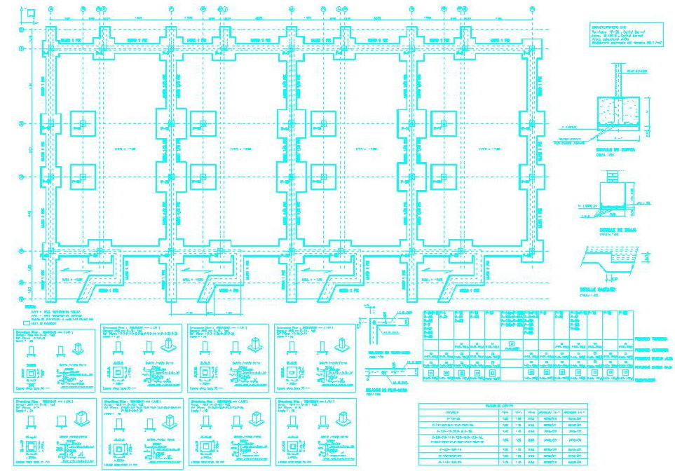

Estudio de Arquitectura y Urbanismo, especialistas en cálculos de Estructuras y de Instalaciones.
Bienvenidos a :: EAJEL :: ESTRUCTURAS
En EAJEL contamos igualmente con técnicos especializados para la realización de todo tipo de cálculo de estructuras de edificación ya sean metálicas o de hormigón armado tanto unidireccional como reticular, mediante el cálculo matricial por ordenador con programas de última generación, los cuales son manejados y supervisados por especialistas altamente cualificados.

EAJEL puede, por tanto, participar en las distintas fases estructurales, bien asesorando desde el inicio del proyecto en la elección de la estructura más idónea, como procediendo al cálculo y realización de los planos de estructura necesarios para el desarrollo total de la obra, como colaborando en la dirección de la obra si fuera menester.
En el mismo orden de cosas EAJEL, colabora en el desarrollo de los planos de instalaciones, mediante el cálculo de las cargas, secciones de cables, diámetros de tuberías, justificaciones conforme al CTE, etc.; necesarios para la realización de todos los planos de las distintas instalaciones de electricidad, calefacción, fontanería, saneamiento, etc., que componen un proyecto de ejecución.